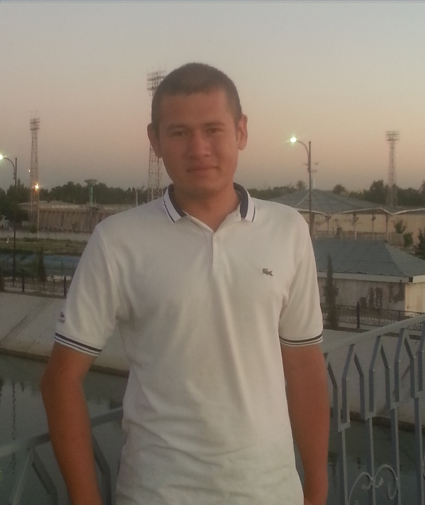

Владелец этого ПК

Родился в "Акалтыне" , 8-сентября 1996-года .
В данное время роживает в 1-м микро районе города Гулистан . В улиице "Дустлик" , дом 22\1 .
Пока не женат !!!
Любимые Занятия :
- Заробатывать денги .
- Создовать сайты и программы .
- Взламывать сети WIFI или незаконное взламывания программ с авторскими правами .
- Учить иностранные языки .
Хобби :
- Читать Научно-Фантастические истории .
- Играть в компютерние игры .
- Собирать монеты .
Места где учился :
- С 1-го до 6-го класса в школе "Кувонч" .
- С 7-го до 9-го класса в 11-школе .
- В 2012-году поступил в первый Академический Лицей .
- В 2017-году поступил в Гул.Д.У. .
- В данное время Учится в Европейско-Математической группе 6e-17 .
На последок .
/*
# Header 1
## Header 2
### Header 3
- Bulleted
- List
1. Numbered
2. List
**Bold** and _Italic_ and `Code` text
[Link](url) and 
*/